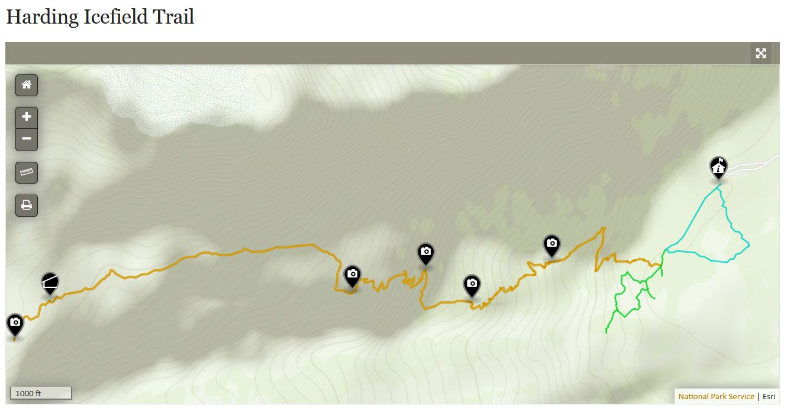
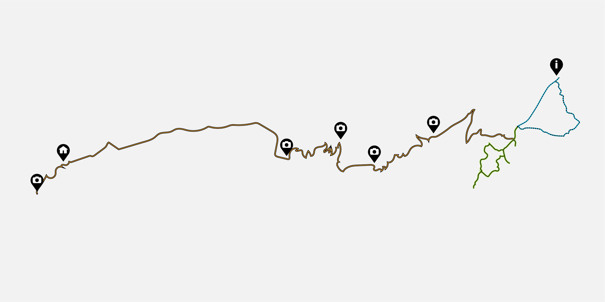

There are several maintained trails in Kenai Fjords National Park in the Exit Glacier Area. They include short trails on the valley floor and the 8-mile loop Harding Icefield Trail. The short trails start at the Exit Glacier Nature Center near the parking lot. Glacier View Loop Trail leads to breathtaking Glacier View from the Harding Icefield. This loop trail is only 1 mile long. For those who want to hike more there is a 6 miles loop trail to the Exit Glacier Overlook via the well-maintained Glacier Overlook Trail.
If you are looking for a stunning longer day hike, there is an 8,2-mile round trip Harding Icefield Trail starting at the Exit Glacier Area. Allow at least 6-8 hours for the hike. It might take you 6-8 hours for the hike but you will be rewarded with the wonderful views from the top. Be prepared for tough ups and downs as the trail starts at the valley floor and climbs above the tree line. Hikers gain approximately 1,000 feet of elevation with every mile. A change in altitude can lead to altitude sickness which is the result of receiving an inadequate supply of oxygen due to different conditions at high altitudes. It's better to prepare for the different weather conditions by staying hydrated and continuously applying an SPF cream of at least 30 or higher. As temperatures are usually cold and rainy and drop as you achieve higher altitudes, make sure to wear comfortable hiking gear that helps you to stay warm and dry. To make the most out of your experience bring a rain jacket, a warm layer (fleece or wool), extra socks, sturdy hiking boots, hats and mittens. You will also need your own drinking water or a filter. It is highly recommended to stay on the trail and respect the work of volunteers who maintain this trail. As many people enjoy hiking with their pets, please keep in mind that leashed pets are allowed on the road to Exit Glacier and in the parking lot. Pets are not allowed on the trails at any point in time.
For your safety and experience please be mindful of the terrain as it is rugged and unpredictable. Encounters with wildlife, unpredictable weather shift, falling ice, or earthquakes are all possible encounters while in the national park. You are responsible for your own safety and the precautions mentioned previously should be taken seriously. We hope that you make the most out of your experience at Kenia Fjords and witness everything it has to offer! See below the trail details as shown on National Park Service website, as well our redesigned, inclusive design friendly version of the map. In the redesigned map, different trail parts are indicated with various patterns, which makes it easier to use the map.

Our redesigned version
Sources:
National Park Service (2022, May). Kenai Fjords National Park. https://www.nps.gov/kefj/index.htm
Singleton, Hannah. “Hiking at Altitude: Tips for Acclimatization.” Wildland Trekking, 30 Apr. 2021, wildlandtrekking.com